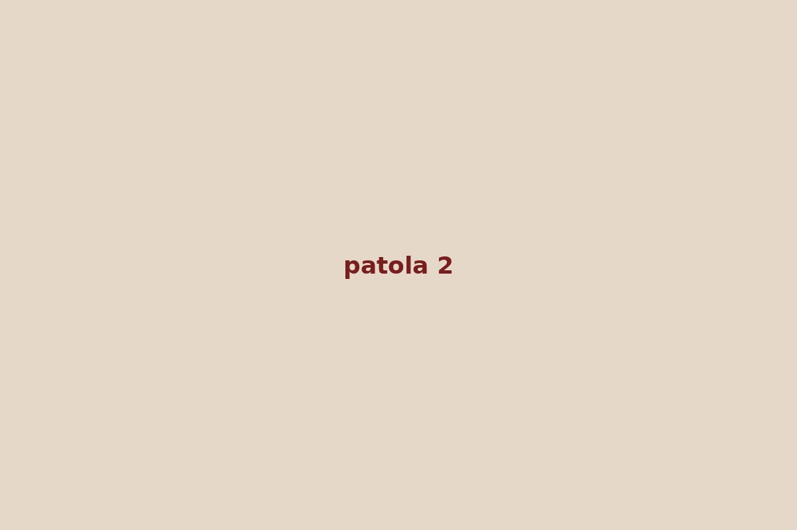

Significance & History
Patola uses double ikat technique with motifs dyed into warp and weft.
Weaving Process
- Double ikat dyeing
- Precision alignment
- Weaving double ikat
- Finishing
Gallery
Our Patola (Double Ikat) Collection
Patola (Double Ikat) Sample 1
₹ 5600
Patola (Double Ikat) Sample 2
₹ 6200
Patola (Double Ikat) Sample 3
₹ 6800
Patola (Double Ikat) Sample 4
₹ 7400
Patola (Double Ikat) Sample 5
₹ 8000
Patola (Double Ikat) Sample 6
₹ 8600